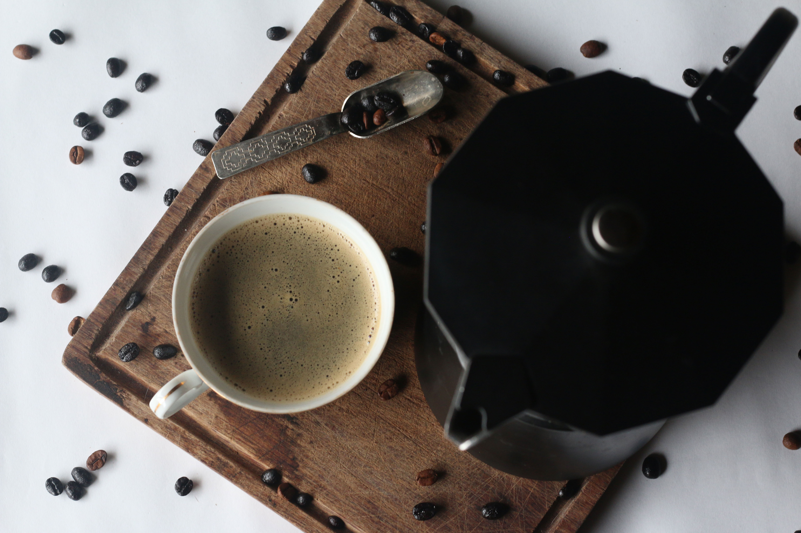
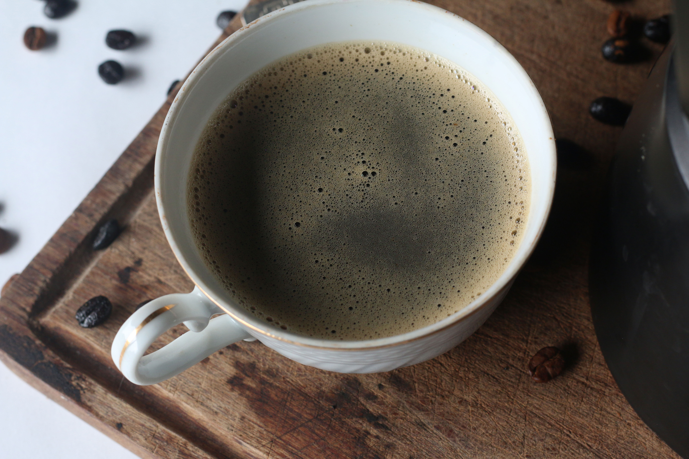
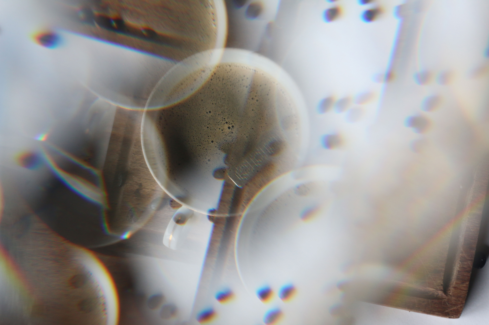

Café Lovers
Busca tu café ideal

Café Gourmet
Un café gourmet, de especialidad debe haber sido cultivado a la sombra y por encima de los 900 metros sobre el nivel del mar, a una temperatura de unos 20º, con una humedad adecuada.

Café de Etiopía
El café etíope reúne unas condiciones que le hacen único en cuanto a aroma y sabor, y esto es gracias a que se cultiva en las zonas de mayor altitud del país, donde hay más humedad y el suelo es más fértil.

Café Colombiano
Colombia es el país con el mejor café suave del mundo gracias al proceso de producción y sus condiciones naturales así como la altitud, latitud y temperatura ideales para su cultivo.
Conocé más sobre los CaféLovers
¡Recibí todos los domingos nuestro newsletter sobre tipos de café y descuentos!